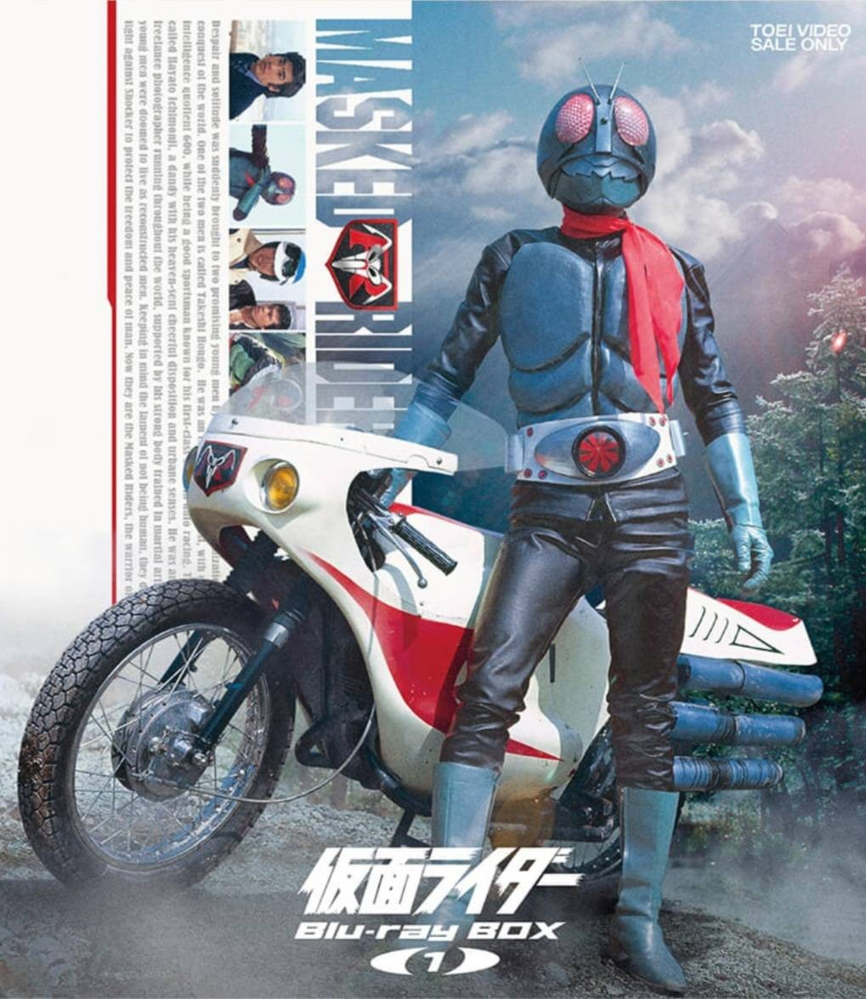
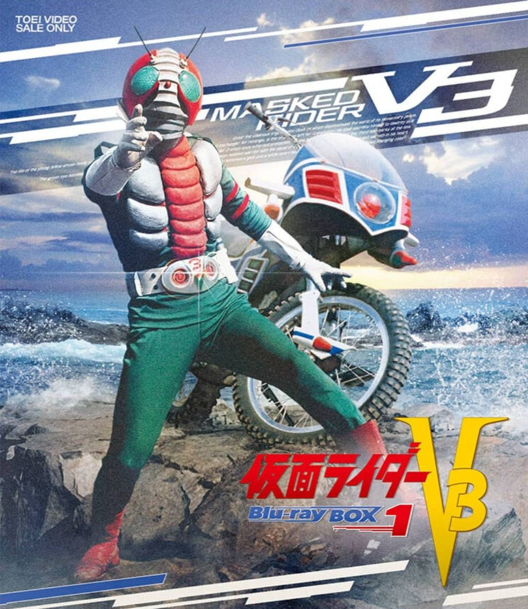
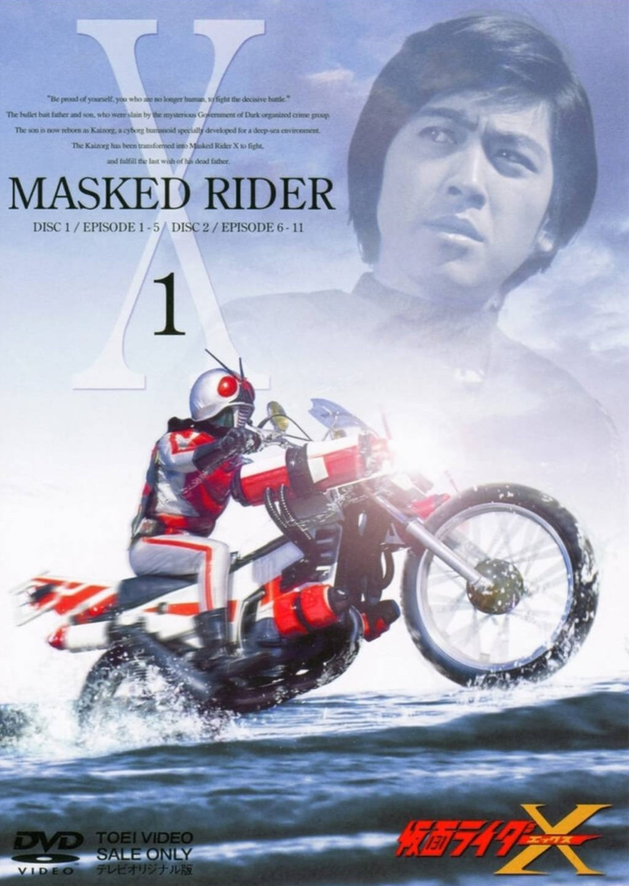
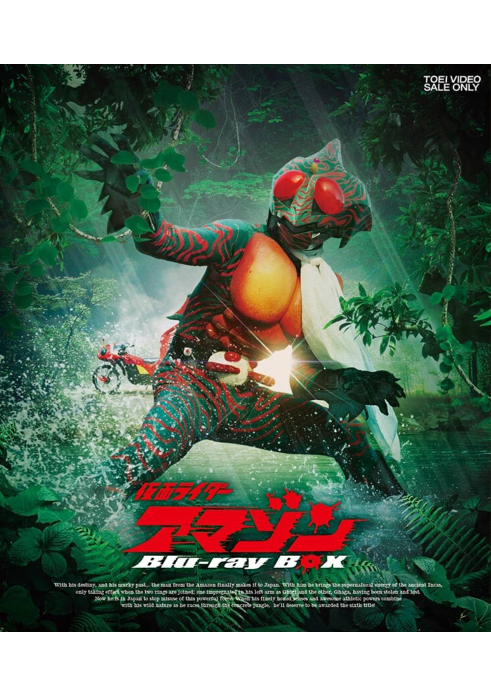
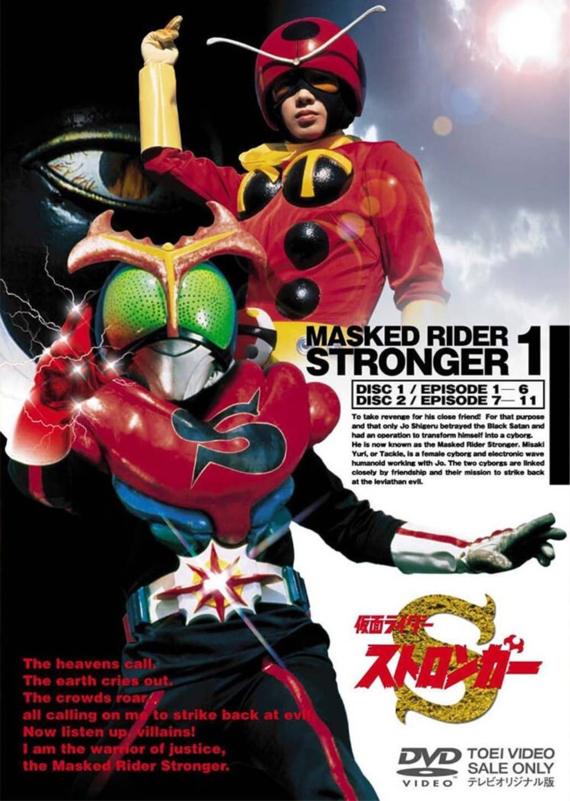
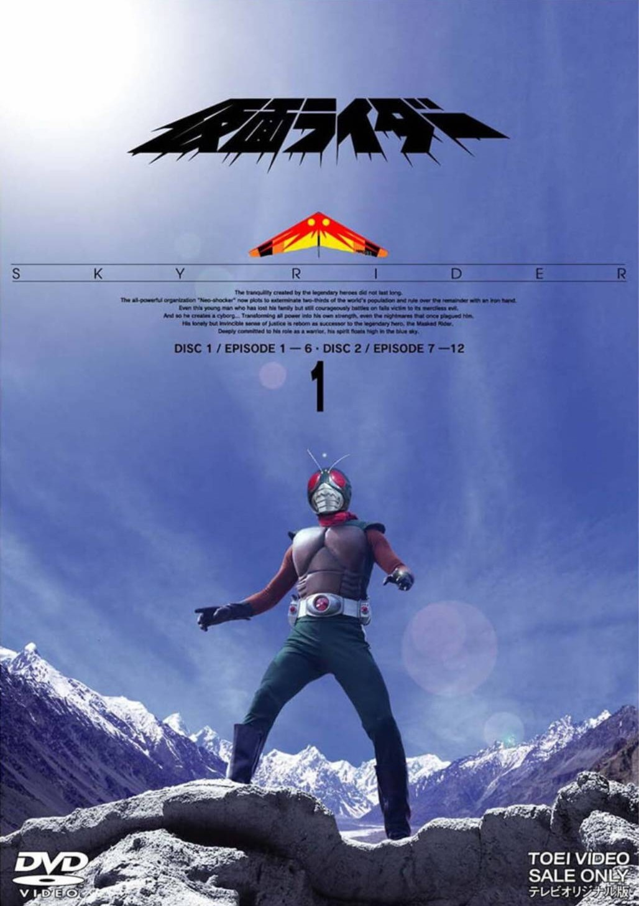
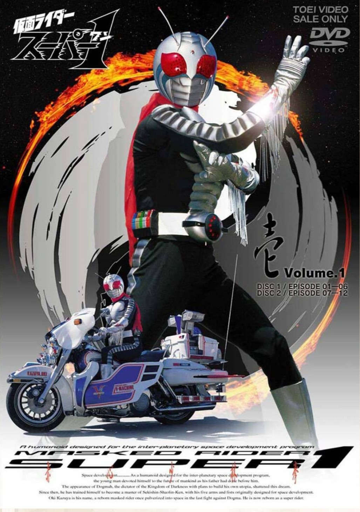
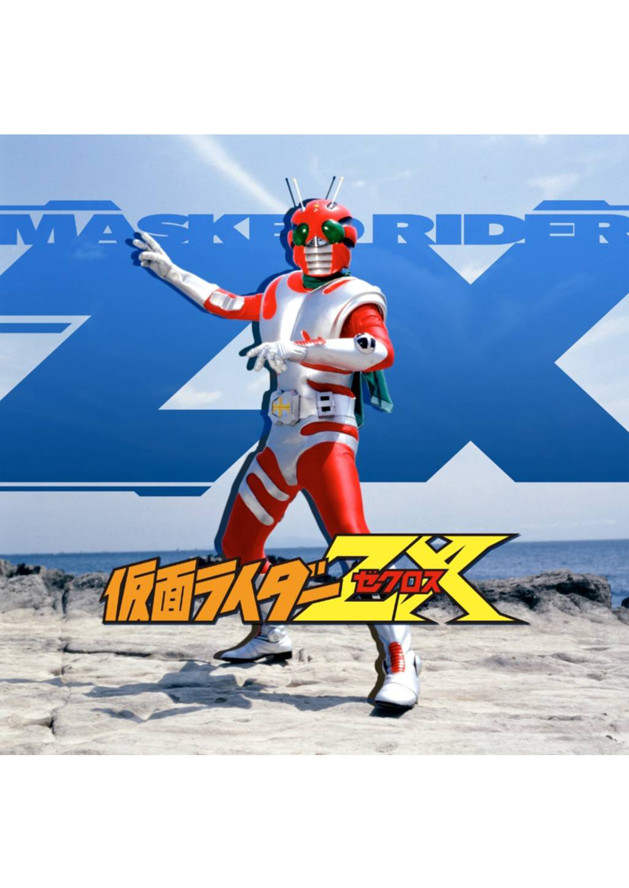
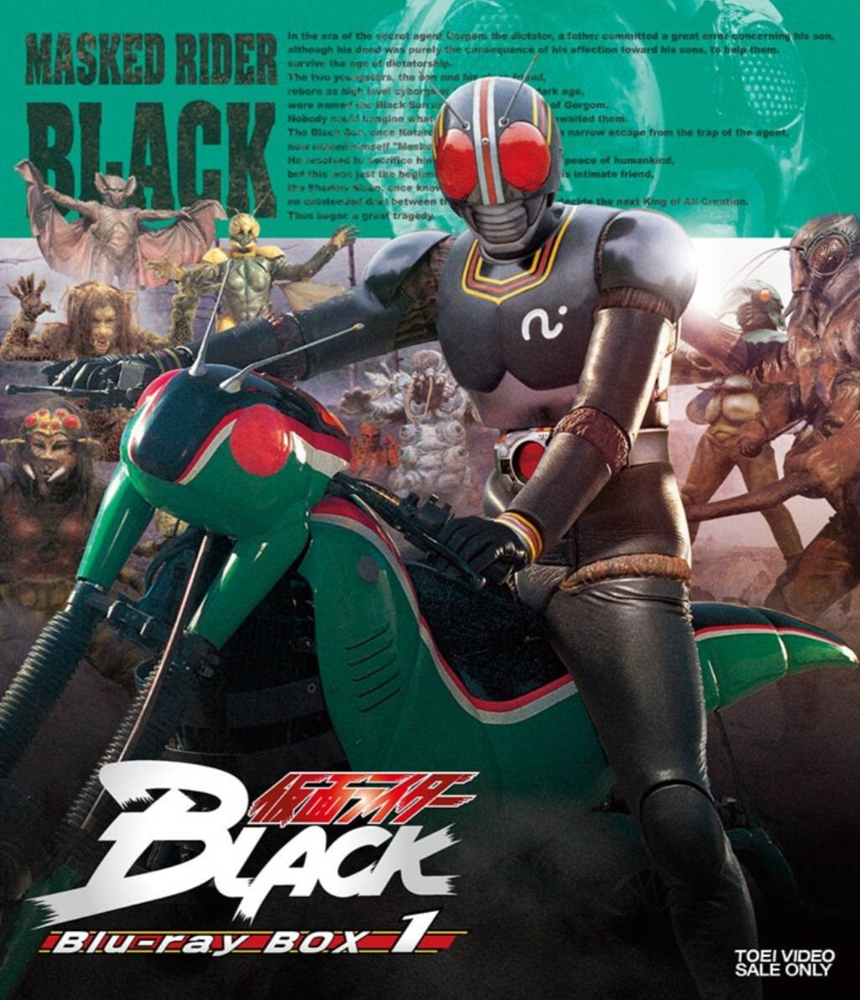
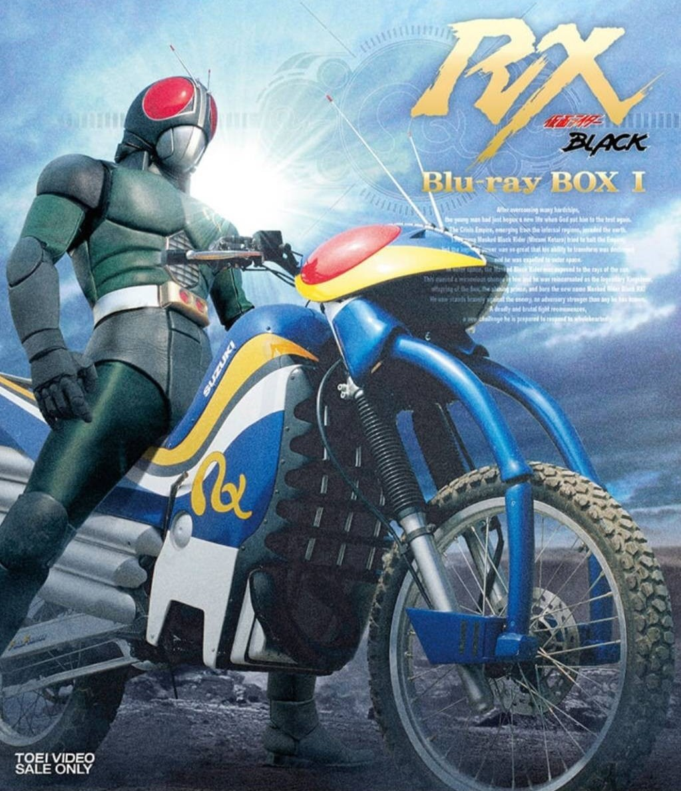

The Showa era marks the origin and foundation of Kamen Rider,
establishing the core identity of the franchise through themes of justice, sacrifice, and resistance against evil organizations.
Stories often depict cyborg heroes born from tragedy,
fighting alone against oppressive forces while struggling with their altered humanity and sense of isolation.
With a strong emphasis on classic tokusatsu action, moral clarity, and heroic resolve,
Showa Riders defined the image of Kamen Rider as a symbol of hope, rebellion, and unwavering justice.

The origin of the legend, depicting a cyborg hero
who rebels against the evil organization that created him.
t establishes the core themes of justice, sacrifice,
and the eternal fight for human freedom.

A tragic successor who inherits the will of two fallen Riders
and fights to protect humanity.
The series deepens emotional drama while reinforcing
legacy, responsibility, and heroic resolve.

A technologically enhanced Rider created
to combat powerful enemies from the sea.
Blending science fiction and classic heroism,
it introduces a weapon-focused combat style.

A feral and instinct-driven Rider raised in the jungle,
far from human civilization.
Known for its raw action and biological horror elements,
it stands out as one of the darkest Showa entries.

A confident and energetic Rider empowered
by electricity to battle evolving threats.
The story emphasizes growth through
rivalry, teamwork, and the strength of human bonds.

A redesigned Rider capable of flight,
symbolizing evolution within the franchise.
It bridges classic Showa traditions with
modernized action and experimental storytelling.

A space-trained Rider equipped with multiple form-changing abilities
for different combat situations.
he series highlights versatility, advanced technology,
and the expansion of Rider capabilities.

A mysterious cybernetic Rider caught between
humanity and the forces of evil.
ts narrative explores identity, betrayal,
and the struggle to choose one’s own path.

A dark and serious tale centered on fate, loneliness,
and resistance against inevitable destiny.
Praised for its mature tone,
it redefined storytelling depth in the Kamen Rider series.

A reborn hero who rises from defeat and evolves beyond his former self.
Combining classic heroism with renewed hope,
it marks a powerful conclusion to the Showa era.